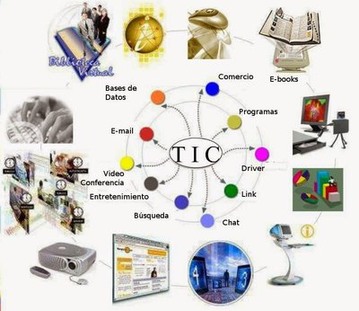

| Lenguajes de programacion - Bessie Luisita Castellanos Javier | |
| Inicio Vida cotidiana Dispositivos Internet Historia de la tecnologia | |
| Bienvenidos a nuestro portal | |
HISTORIA DE LA TECNOLOGIALa historia de la tecnología abarca desde el uso de herramientas de piedra en la prehistoria (hace 3.3 millones de años) hasta la era digital actual. Evolucionó del control del fuego, la agricultura, la metalurgia y la imprenta, hacia la Revolución Industrial y la actual revolución de la inteligencia artificial, mejorando la capacidad humana para resolver problemas y mejorar su calidad de vida. La tecnología ha traído consigo descubrimientos en el plano de la medicina, avances en el acceso a la información, en la comunicación y el transporte, en la simplificación de tareas.  |
Datos curisos
|
|
2026 Bessie Castellanos ESC.PREP.FED.POR.COOP.PROFR.AUGUSTO HERNANDEZ OLIVE Todos los derechos reservados |
|